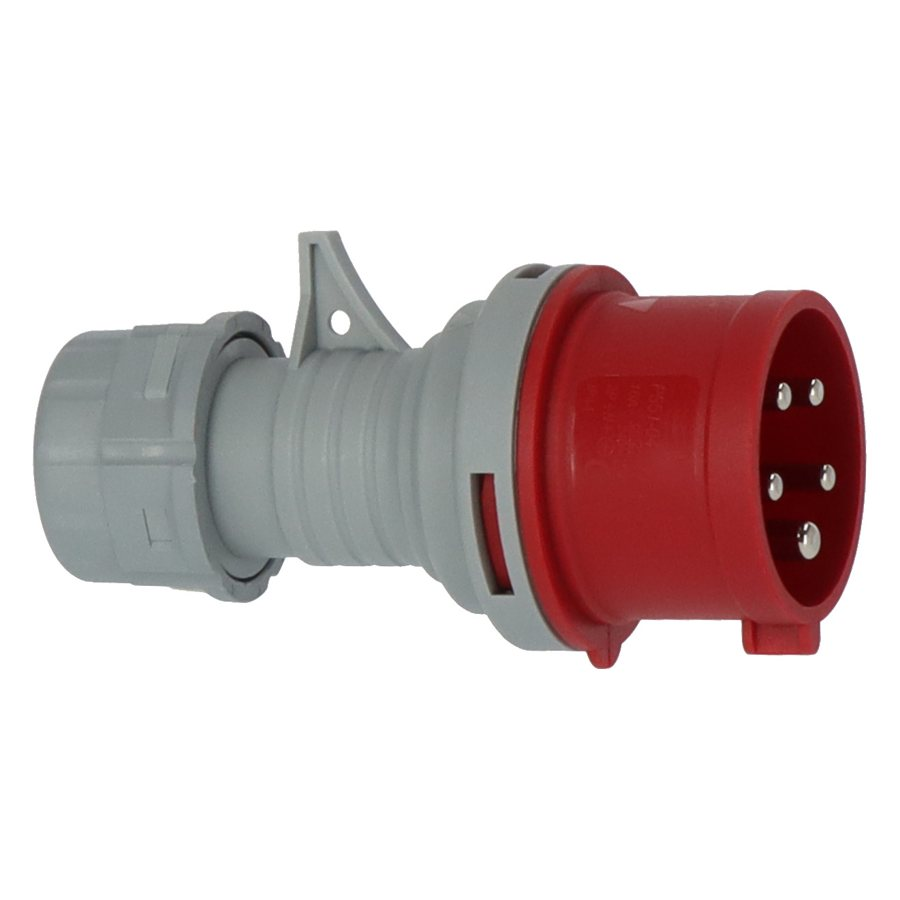
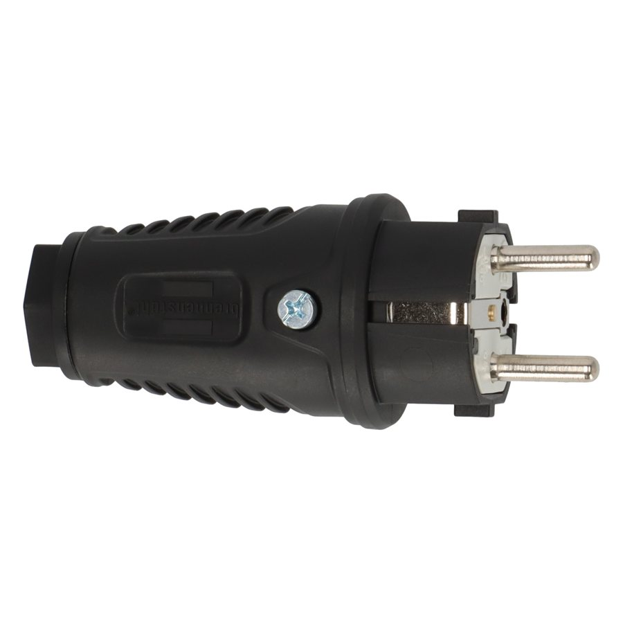
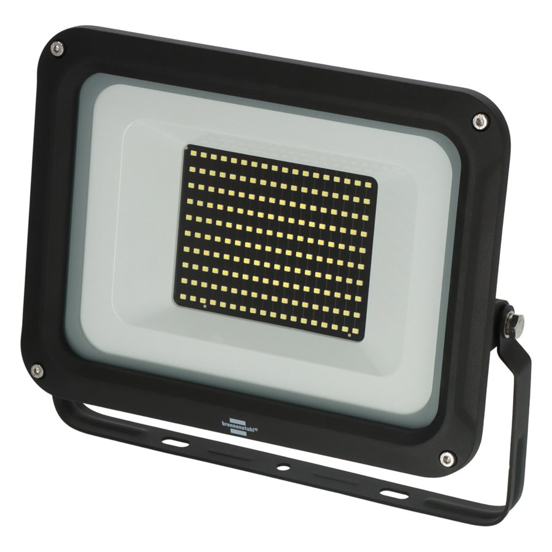
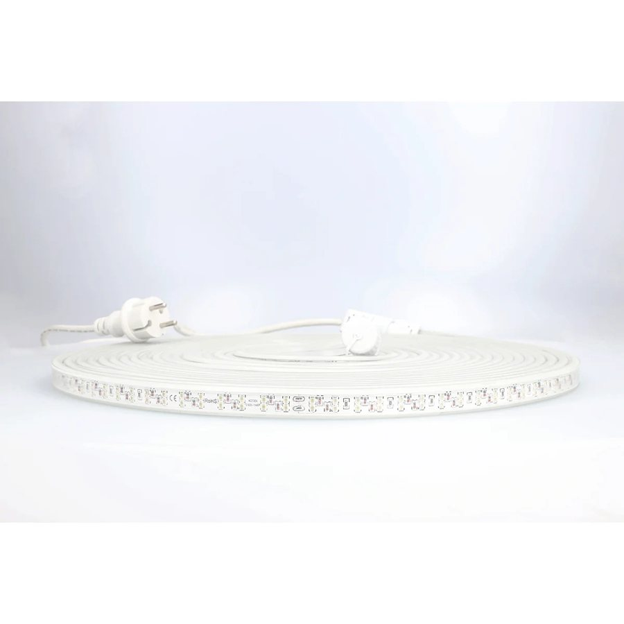
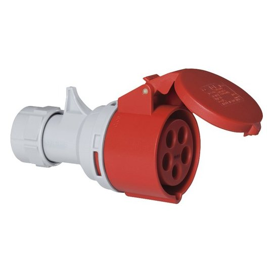
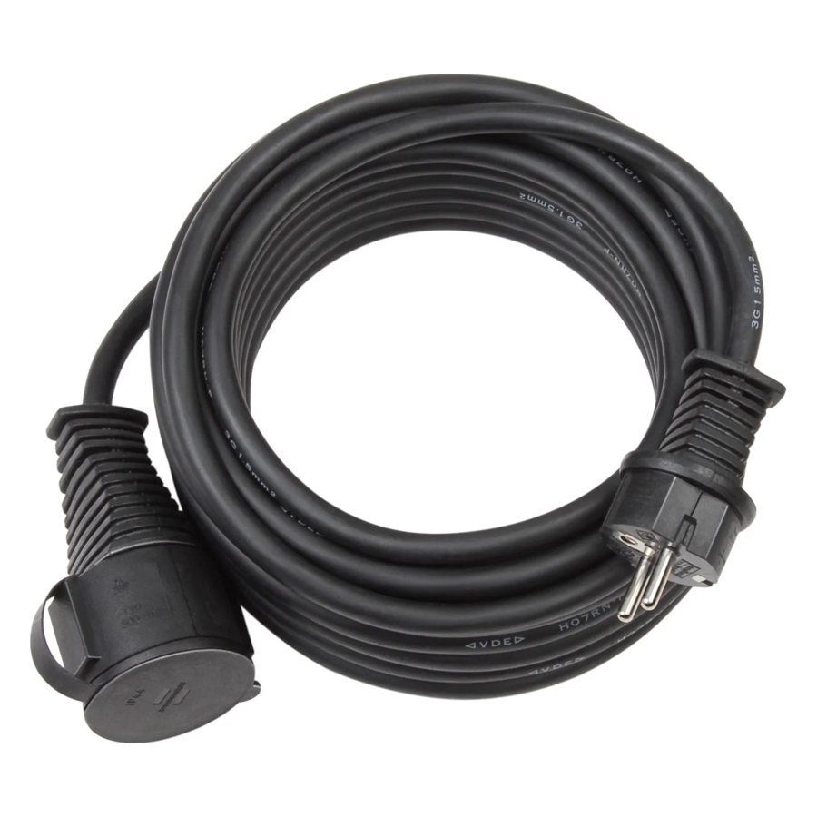
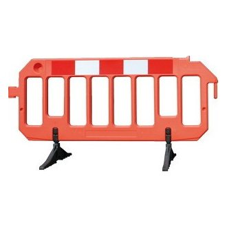
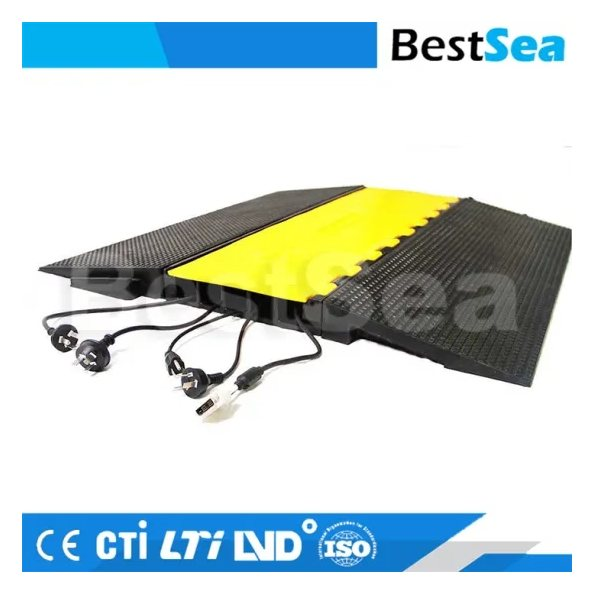

Abbildung ähnlich – zeigt den Produkttyp.
LED-Akkustrahler 20 W, 2.000 lm, IP54, mit Ständer
Netzunabhängiger Li-Ion-Akkustrahler für Keller, Schächte und Rückbaubereiche ohne Baustromanschluss.
Der LED-Akkustrahler macht Arbeitsbereiche ohne Netzanschluss hell, etwa in Kellern, Schächten, Dachböden und bei Rückbauarbeiten vor Anschluss der Baustromverteilung, und ersetzt Kabelwege, über die man auf der Baustelle stolpert. Professionelle Anwender erwarten ein schlag- und spritzwassergeschütztes Gehäuse (mindestens IP54), einen Li-Ion-Akku mit Ladestandsanzeige und Tiefentladeschutz, flimmerfreies Licht ohne Blendung sowie einen stabilen Ständer oder Haken bzw. Magnet für den Einsatz in Zwangslagen.
Technische Daten
| Leistung | 20 W (LED) |
|---|---|
| Lichtstrom | ≥ 2.000 lm (gemessen) |
| Akku | Li-Ion (18650), 3,7 V, ca.; 4.400-8.800 mAh je Ausführung |
| Laufzeit | ca.; 3-6 h |
| Schutzart | mindestens IP54 |
| Lichtfarbe | 4.000-6.500 K |
| Laden | USB-C oder Netzteil 100-240 V, Ladestandsanzeige |
| Aufstellung | Klappständer, Tragegriff, Haken/Magnet; stoßfestes Gehäuse |
| Zolltarifnummer (HS) | 85131000 |
EU-Normen und Vorschriften
EN 60598-1 / EN 60598-2-5Leuchten: Allgemeine Anforderungen und ScheinwerferEN 62471Photobiologische Sicherheit von Lampen und LampensystemenEN 62133-2 · UN 38.3Sicherheit von Lithium-Zellen und Transportprüfung(EU) 2023/1542 · BattDGEU-Batterieverordnung und Batterie-Registrierung2014/35/EU · 2014/30/EU · 2011/65/EUCE-Kennzeichnung: Niederspannungsrichtlinie, EMV-Richtlinie, RoHSElektroG / WEEERegistrierung bei der Stiftung EAR
Passt dazu


Weitere Produkte dieser Kategorie














